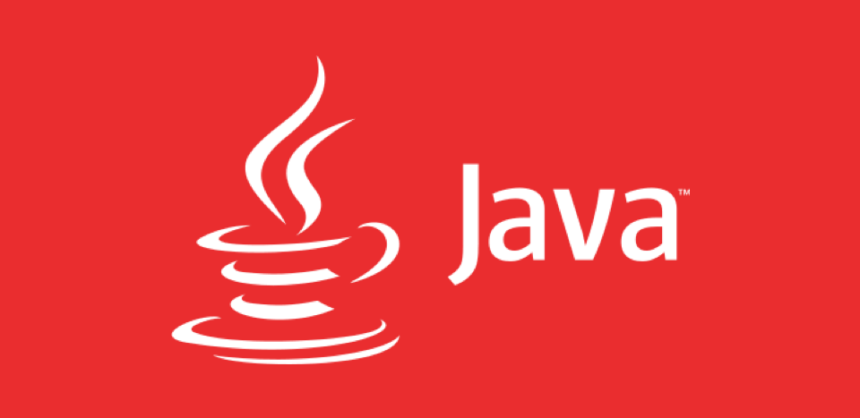

A função de um backend está relacionada com servidores, bancos de dados, segurança, estrutura, gerenciamento de conteúdo e atualizações.
Esse tipo de aplicação serve para tratar os dados e também é o local onde ocorrem as inserções, arquivamentos e leituras de dados, por
trás de uma aplicação. De forma resumida, são recursos que garantem a concretização dos processos mais simples em um ambiente eletrônico,
como buscas em sites de compra ou até mesmo as ações mais complexas. O presente trabalho tem como objetivo abordar algumas linguagens muito
utilizadas atualmente no backend e apresentar suas principais carcterísticas.
As linguagens de programação podem ser divididas em dois grandes grupos: compiladas e interpretadas. A seguir serão listadas algumas delas.
- Linguagens Compiladas
As linguagens compiladas são convertidas diretamente na máquina em um código de máquina que o processador pode executar.
Como resultado, elas tendem a ser mais rápidas e mais eficientes em sua execução do que as linguagens interpretadas. Elas também dão ao
desenvolvedor mais controle sobre alguns aspectos do hardware, como o gerenciamento da memória e o uso da CPU.- C
- C++
- Go
- Java 
C é uma linguagem de programação de propósito geral, estruturada, imperativa, procedural, padronizada pela Organização Internacional
para Padronização, criada em 1972 por Dennis Ritchie na empresa AT&T Bell Labs para desenvolvimento do sistema operacional Unix.
C++ é uma linguagem de programação compilada multi-paradigma, com suporte para linguagem imperativa, orientada a objetos e genérica e de
uso geral. Desde os anos 1990 é uma das linguagens comerciais mais populares, sendo bastante usada também na academia por seu grande
desempenho e base de utilizadores.
Go é uma linguagem de programação criada pela Google e lançada em código livre em novembro de 2009. É uma linguagem compilada e focada
em produtividade e programação concorrente, baseada em trabalhos feitos no sistema operacional chamado Inferno. A sintaxe de Go é semelhante
a C e suas declarações são feitas com base em Pascal limpo; uma variação é a declaração de tipos, a ausência de parênteses em volta das estruturas
for e if. Possui coletor de lixo. Seu modelo de concorrência é baseado no CSP de Tony Hoare, além de possuir características do cálculo pi, como passagem por canal.Java é uma linguagem de programação orientada a objetos desenvolvida na década de 90 por uma equipe de programadores chefiada por James Gosling,
na empresa Sun Microsystems, que em 2008 foi adquirido pela empresa Oracle Corporation. - Linguagens Interpretadas
Os interpretadores passam por um programa linha por linha e executam cada comando. Aqui, se o autor decidir que quer usar um tipo diferente de óleo de oliva,
só precisaria remover o antigo e adicionar o novo. Seu amigo tradutor poderia informar isso a você quando a mudança acontecesse- Python
- Ruby
- PHP

Python é uma linguagem de programação de alto nível, interpretada de script, imperativa, orientada a objetos, funcional, de tipagem dinâmica e forte.
Foi lançada por Guido van Rossum em 1991. Muito utilizada atualmente para análise de dados.
Ruby é uma linguagem de programação interpretada multiparadigma, de tipagem dinâmica e forte, com gerenciamento de memória automático,
originalmente planejada e desenvolvida no Japão em 1995, por Yukihiro "Matz" Matsumoto, para ser usada como linguagem de script.
PHP é uma linguagem interpretada livre, usada originalmente apenas para o desenvolvimento de aplicações presentes e atuantes no lado do servidor,
capazes de gerar conteúdo dinâmico na World Wide Web. Figura entre as primeiras linguagens passíveis de inserção em documentos HTML, dispensando em
muitos casos o uso de arquivos externos para eventuais processamentos de dados. O código é interpretado no lado do servidor pelo módulo PHP, que
também gera a página web a ser visualizada no lado do cliente.
Existem diversas linguagens de programação que são utilizadas hoje no backend. Além disso, o tipo da linguagem, podendo ser ela interpretada ou compilada,
são muito relevantes no uso e ramo de negócio em que elas são aplicadas. Um bom entendimento do escopo de um projeto ou uma aplicação ajudam na melhor escolha
da linguagem de progração que deve ser utilizada.